System Architecture
Mission
Special Situations Radar (SSR) is an AI-assisted event-driven research platform. Its mission is to identify announced future cash events affecting publicly traded securities worldwide as early as possible, perform structured research using user-defined protocols, and present the findings for investment decision-making.
SSR does not make investment decisions. SSR discovers, researches, and organises information. The user allocates capital.
Core Principles
- Never miss a defined future cash event.
- The Google Workbook is the Knowledge Base.
- Analysis protocols are the firm's intellectual property.
- AI models are replaceable.
- News sources are replaceable.
- Unknown events are never ignored.
- Every protocol improves over time.
High-Level Pipeline
See the Pipeline Specification for detailed step-by-step documentation of how data flows through the system.
Knowledge Base (Google Workbook)
See the Workbook Schema for detailed documentation of all configuration tabs. The workbook serves as the brain of the operation, controlling all filtering rules, ontology mappings, and AI playbooks.
Cash Event Philosophy
SSR searches for announced future cash events. The list is intentionally expandable through the Google Workbook configuration, but primary examples include:
- Cash mergers
- Tender offers
- Odd-lot tenders
- ETF/Fund liquidations
- Company liquidations
- Special dividends
- Return of capital
- Capital reductions
- Litigation distributions
- Mandatory offers
- Schemes of arrangement
- Squeeze-outs
Continuous Learning
Whenever SSR encounters an event that does not fit an existing protocol, it must:
* Flag the event to the Unknown Events tab.
* Explain why no protocol matched.
* Suggest a new protocol if appropriate.
The user then decides whether to extend the Knowledge Base by modifying the Ontology or Rules.
Design Goals
- Modular: Components can be swapped easily.
- Source-agnostic: Custom HTML scrapers or RSS feeds can be attached to the ingestion engine with minimal configuration.
- AI-agnostic: Google Gemini and OpenRouter integrations are abstracted behind simple retry logic and can be swapped.
- Broker-agnostic: Pure intelligence output; no execution logic.
- Globally scalable: Driven by a language-agnostic ontology rather than English regex strings.
- Maintainable: Code is lightweight, avoiding sprawling dependencies. The Knowledge Base evolves continuously while the engine simply executes it.
\n## Pipeline Diagram\n\n

\n